⚠ USERS & ROLES TEST REPORT — USER ACCOUNTS & PERMISSIONS
UAT Execution Report: USERS Module
This test report covers User Management in ECMS. Key findings: Viewing existing users, editing user profiles, changing roles, assigning resources, and searching user lists all work properly. Creating new users and accessing the Department setup page currently have errors that prevent saving.
Total Scenarios
8
Checkpoints Verified
27
Functional Passed
17
Deviations
2
Confirmed Bugs
3
Blocked (by defect)
5
Scenario 1: MENU NAVIGATION & NEW USER FORM
Rows 1-4
| Row | Steps to Reproduce | Expected Result | Actual Result (Live Execution) | Deviations & Defect Notes | Status | Screenshot Evidence |
|---|---|---|---|---|---|---|
| 1 | From the Menu click on User |
A sub menu "roles, Department, user" should be displayed
|
Confirmed: sidebar "Users" expands to Department / Roles / Users —
exact match (different order, same 3 items).
|
None.
|
PASSED |  |
| 2 | Click on User sub-menu |
Display User page
|
"Users" list loads: Total Records 12, Total Active 11, Total
Suspended 1, with Name/Email/Phone/Department/Status/Actions columns.
|
None.
|
PASSED |  |
| 3 | Click on Create button |
Display new user page
|
"New User" form loads with Firstname*, Lastname*, Email*, Phone*,
Role, Department, Grade Level*, Line Manager, Profile Picture, Staff ID, Job Title*, Regions*,
Address1/2, City, State — matches and exceeds the script’s field list.
|
None.
|
PASSED |  |
| 4 | Enter valid Firstname/Lastname/Email/Phone; select Role/Department/Grade Level/Line Manager/Regions; enter Staff ID/Job Title |
Display each field correctly
|
All fields accepted and confirmed via the underlying native <select>
elements immediately before submit — ruling out a widget-sync bug as the cause of the next row.
|
None.
|
PASSED |  |
Scenario 2: CREATE USER SUBMISSION (P0 DEFECT)
P0 Defect
| Row | Steps to Reproduce | Expected Result | Actual Result (Live Execution) | Deviations & Defect Notes | Status | Screenshot Evidence |
|---|---|---|---|---|---|---|
| 5 | Click on Create button (fully valid data) |
Display a successful message, "successfully Created."
|
CONFIRMED BUG (P0, 2/2 reproductions): the form silently resets to a blank
"New User" page. No success message, no error message, no toast. Verified via full page
reload and text search that the user was never created (search returned "1 of 0"). Repeated
with entirely fresh data — identical silent failure.
|
[Defect - P0]: Create User does not persist despite fully valid input.
|
CONFIRMED BUG (P0, 2/2) |  |
Scenario 3: CREATE USER (INVALID CREDENTIAL)
Rows 6-9
| Row | Steps to Reproduce | Expected Result | Actual Result (Live Execution) | Deviations & Defect Notes | Status | Screenshot Evidence |
|---|---|---|---|---|---|---|
| 6 | Enter invalid Email address (missing "@") |
Should not accept invalid email address
|
Native browser validation correctly blocked submission: "Please include an
'@' in the email address..."
|
None.
|
PASSED |  |
| 7 | Enter invalid Phone number ("abc123XYZ") with a valid email |
Should not accept invalid phone number
|
Native browser validation correctly blocked submission: "Please match the
requested format..."
|
None.
|
PASSED |  |
| 8 | Enter duplicate Staff ID and click Create |
Display an error message, "Staff ID has been entered already."
|
Could not be executed — requires a Staff ID belonging to a successfully-created
user, but Scenario 2 confirmed no user can currently be created at all. Blocked by that defect, not
skipped by choice.
|
[Blocked]: no valid baseline user exists to duplicate against.
|
BLOCKED (by defect) | No UI Component (Blocked) |
| 9 | Leave all compulsory fields empty and click Create |
Should not accept blank required fields
|
Native browser validation correctly blocked submission on the first required
field: "Please fill out this field."
|
None.
|
PASSED | 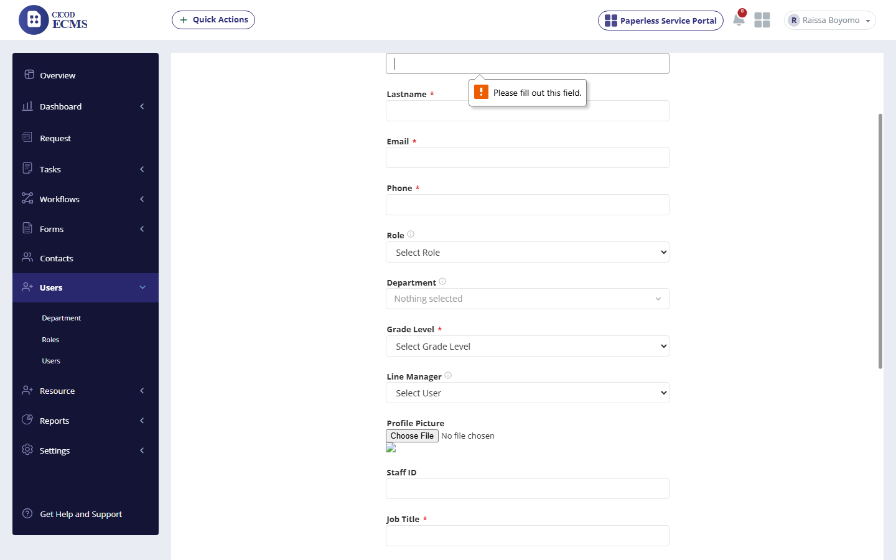 |
Scenario 4: VIEW USER & EDIT USER
Rows 10-12
| Row | Steps to Reproduce | Expected Result | Actual Result (Live Execution) | Deviations & Defect Notes | Status | Screenshot Evidence |
|---|---|---|---|---|---|---|
| 10 | Click into an existing user |
Display user profile page
|
Opened "Chinwuba Okafor" — full profile renders correctly: Email,
Phone, Role, Job Title, Department, Grade Level, Location, Assigned Tasks summary, "Assign to
region"/"Assign to department" actions.
|
None.
|
PASSED | 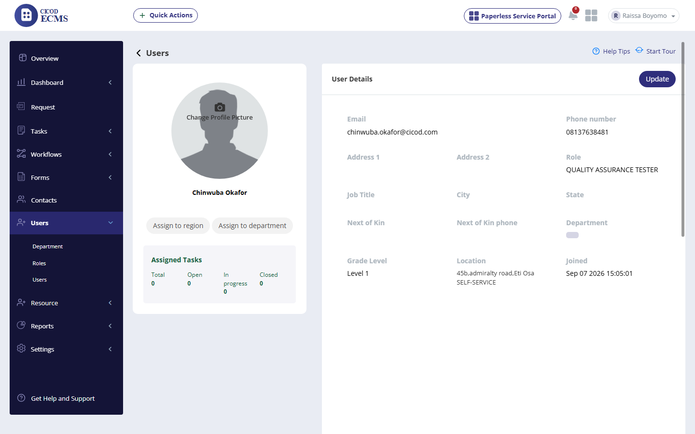 |
| 11 | Click Update on a user |
Display the update form, pre-filled
|
Update User form correctly pre-fills every field including the multi-select
Regions (shown as "45b,admiralty road,Eti Osa , SELF-SERVICE") and State ("Lagos")
— a clean contrast to the equivalent Contacts-module bug.
|
None.
|
PASSED | 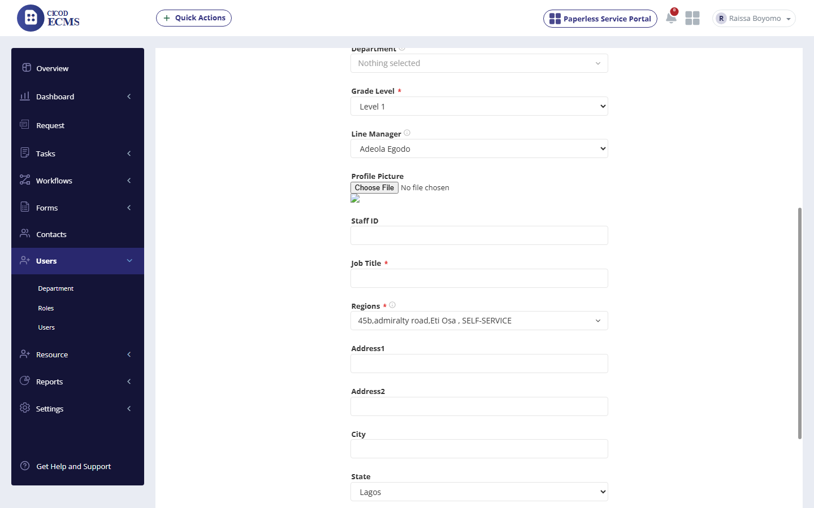 |
| 12 | Update a field (Job Title) and save |
Should update successfully
|
Set Job Title to "UAT Updated Job Title" and saved.
"Successful" confirmation shown; reopening the profile confirmed the new Job Title persisted
correctly.
|
None.
|
PASSED |
Scenario 5: SUSPEND / UNSUSPEND USER
P1 Defect
| Row | Steps to Reproduce | Expected Result | Actual Result (Live Execution) | Deviations & Defect Notes | Status | Screenshot Evidence |
|---|---|---|---|---|---|---|
| 13 | Suspend a user whose Job Title was never filled in ("Reb Saku") |
Should suspend the user
|
CONFIRMED BUG: failed with "Job Title cannot be blank." — an
unrelated full-profile validation error blocking what should be a simple status toggle. User remained
ACTIVE.
|
[Defect]: Suspend User blocked by unrelated Job Title validation.
|
CONFIRMED BUG |  |
| 14 | Suspend a user whose Job Title IS filled ("Chinwuba Okafor") — isolating control |
Should suspend the user
|
Succeeded cleanly: "Suspended" confirmation, status flipped to
SUSPENDED, Total Suspended incremented. Confirms the root cause is specifically the blank Job Title,
not a general Suspend failure.
|
None (isolates row 13’s root cause).
|
PASSED | 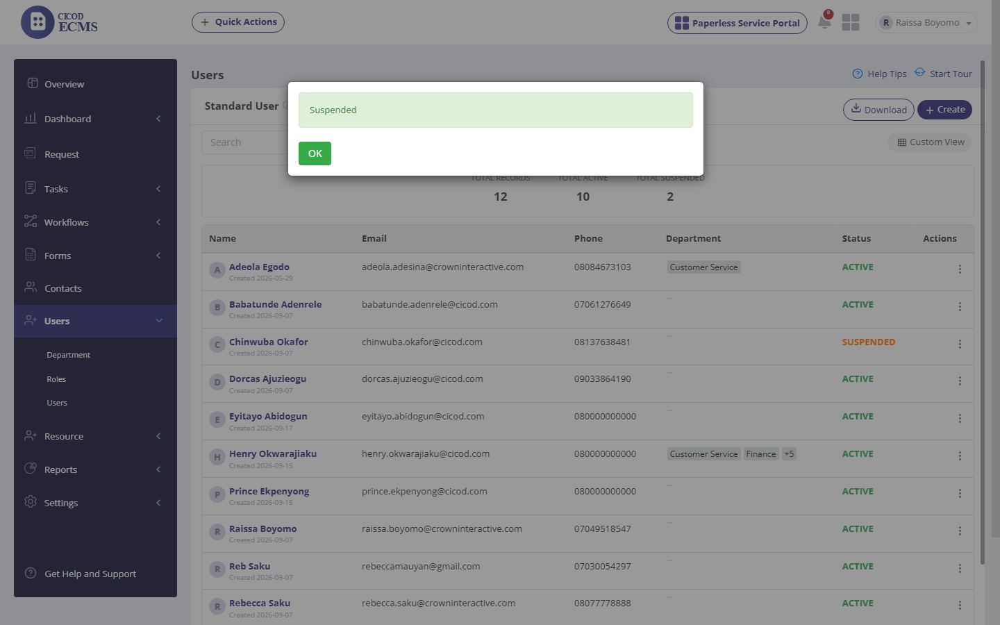 |
| 15 | Unsuspend the same user |
Should unsuspend the user
|
"Un-Suspended" confirmation shown, status correctly reverted to
ACTIVE.
|
None.
|
PASSED | 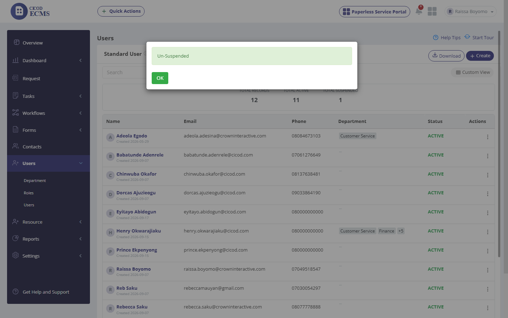 |
Scenario 6: MAKE A RESOURCE & SEARCH USERS
Rows 16-17
| Row | Steps to Reproduce | Expected Result | Actual Result (Live Execution) | Deviations & Defect Notes | Status | Screenshot Evidence |
|---|---|---|---|---|---|---|
| 16 | Convert an existing user into a Resource |
Should convert the user into a bookable Resource
|
"New Resource" form opened (Next of Kin, Address, State*, Date
Joined* defaulted to 01-01-1970, Resource Type*, Resource Level*, Resource Schedule). Filled
State/Type/Level and submitted: "Successful". User removed from standard Users list (12→11)
and correctly appeared in the Resource module instead.
|
[Deviation]: Date Joined defaults to Unix epoch (01-01-1970) instead of
blank/today.
|
PASSED (minor deviation) | 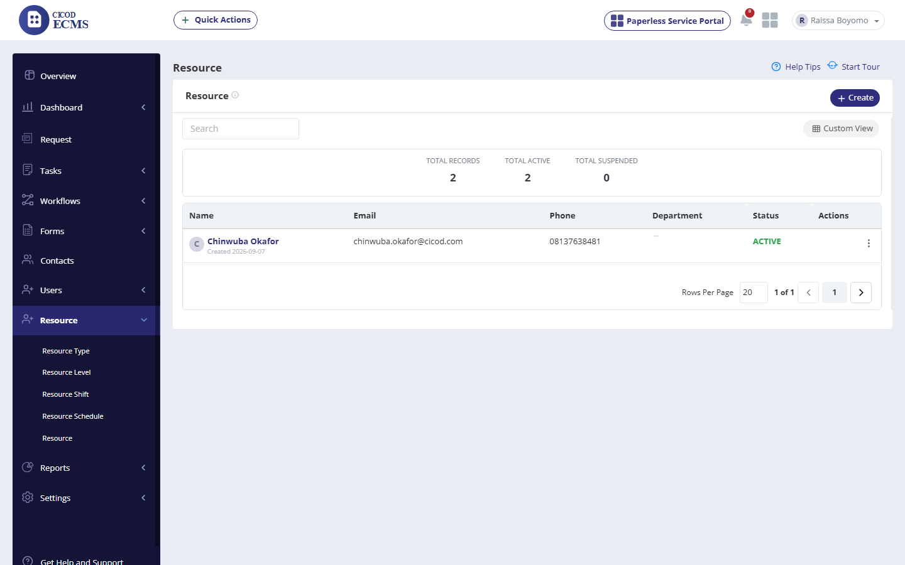 |
| 17 | Search users by name |
Filter user by name
|
Confirmed: searching "Prince" correctly narrowed the list to the
single matching user, "Prince Ekpenyong."
|
None.
|
PASSED | 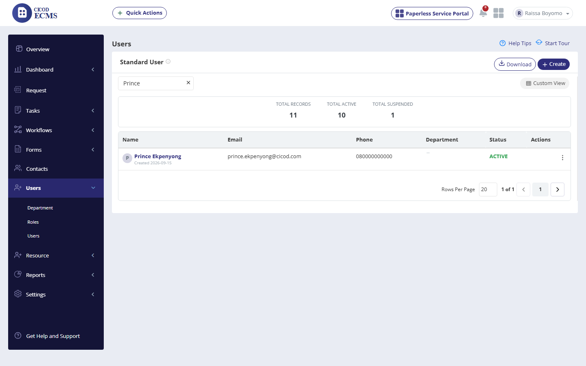 |
Scenario 7: DEPARTMENT (CREATE / EDIT / SUSPEND / UNSUSPEND / SEARCH)
P0 Defect
| Row | Steps to Reproduce | Expected Result | Actual Result (Live Execution) | Deviations & Defect Notes | Status | Screenshot Evidence |
|---|---|---|---|---|---|---|
| 18 | Click on Department (sidebar link and direct URL) |
Display Department page, then create a new department
|
CONFIRMED BUG (P0, 2/2 reproductions): both clicking the sidebar
"Department" link and navigating directly to r=team/index return "Oops! Something went
wrong. We are fixing it!" every time. The page never loads.
|
[Defect - P0]: Department page is entirely inaccessible.
|
CONFIRMED BUG (High Priority) | 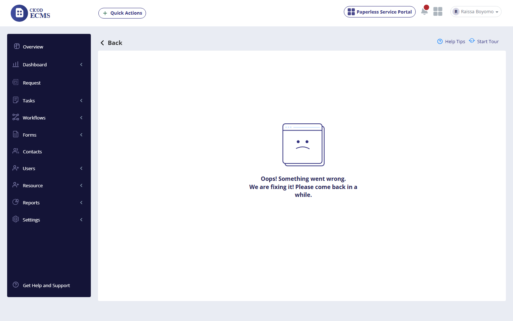 |
| 19 | Edit Department |
Display Department page, then update an existing department
|
Blocked by row 18’s defect — the Department page itself never loads.
|
[Blocked]: cannot reach the feature at all.
|
BLOCKED (by defect) | BLOCKED BY DEFECT |
| 20 | Suspend Department |
Display Department page, then suspend a department
|
Blocked by row 18’s defect.
|
[Blocked]: cannot reach the feature at all.
|
BLOCKED (by defect) | BLOCKED BY DEFECT |
| 21 | Unsuspend Department |
Display Department page, then unsuspend a department
|
Blocked by row 18’s defect.
|
[Blocked]: cannot reach the feature at all.
|
BLOCKED (by defect) | BLOCKED BY DEFECT |
| 22 | Search Department |
Display Department page, then filter by name
|
Blocked by row 18’s defect.
|
[Blocked]: cannot reach the feature at all.
|
BLOCKED (by defect) | BLOCKED BY DEFECT |
Scenario 8: ROLES (CREATE / EDIT / SUSPEND / UNSUSPEND / SEARCH)
Rows 23-27
| Row | Steps to Reproduce | Expected Result | Actual Result (Live Execution) | Deviations & Defect Notes | Status | Screenshot Evidence |
|---|---|---|---|---|---|---|
| 23 | Create a new Role |
Should display Create Role form, then save successfully
|
"Create Role" form (Role Name, Description) accepted "UAT Test
Role" / description. Proceeding through the "Give role access" feature-checklist wizard
(1 of 2) and workflow-queue-access wizard (2 of 2, left unchecked), "Role Successfully
Created." confirmed and persisted on reload.
|
None.
|
PASSED | 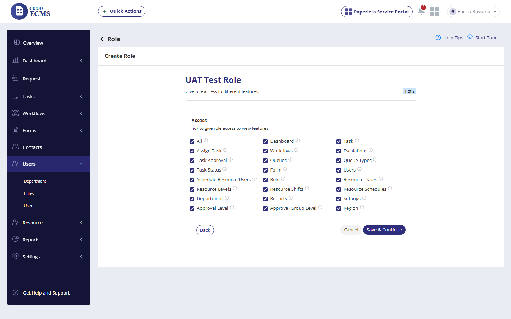 |
| 24 | Edit Role — form pre-fill and save |
Should display Update Role form pre-filled, then save
|
Role Name and Description correctly pre-filled, feature-access checklist
correctly pre-checked from creation. Edited the description and completed the same 2-step wizard
through to Finish: change persisted correctly on reload.
|
None.
|
PASSED | 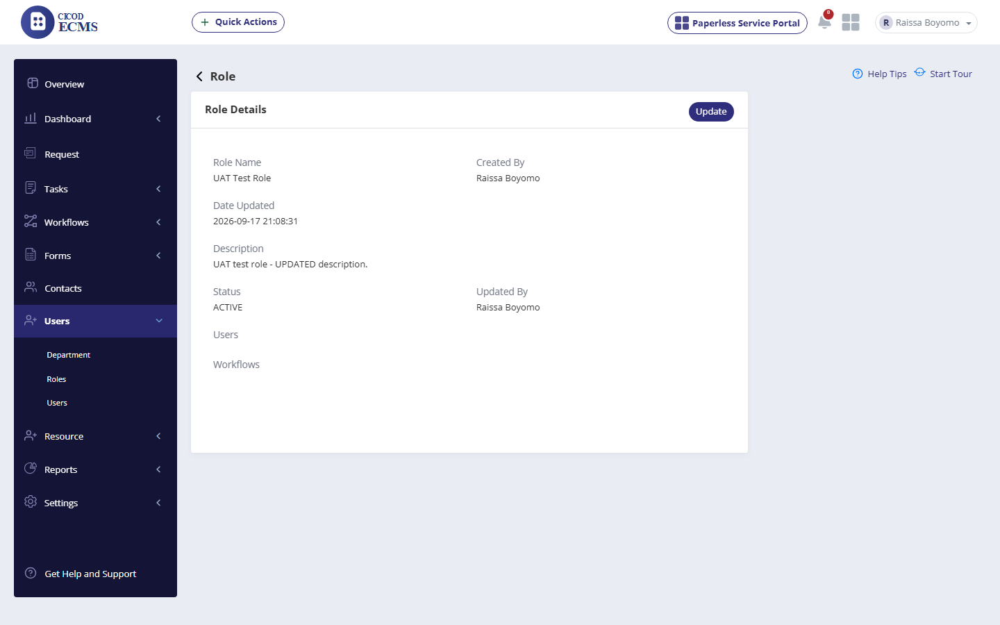 |
| 25 | Suspend Role |
Should suspend the role
|
Confirmed working: "Suspended" message shown, status flipped, Total
Suspended incremented. The native confirm dialog reads "Suspend this Region to Role?" — a
minor copy/label bug, not functional.
|
[Deviation]: confirm-dialog text says "...Region to Role?" instead
of "...this Role?".
|
PASSED (minor deviation) | 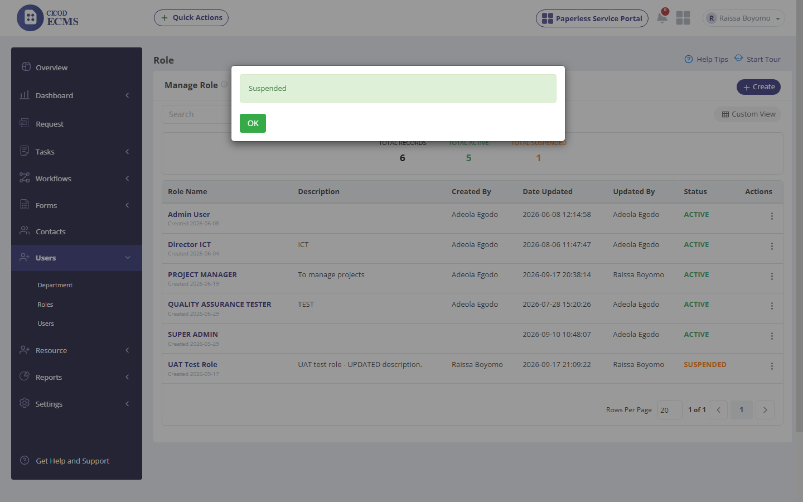 |
| 26 | Unsuspend Role |
Should unsuspend the role
|
Confirmed working: "Un-Suspended" message shown, status correctly
reverted to ACTIVE. Same minor dialog-text quirk as row 25.
|
None (same noted deviation as row 25).
|
PASSED | |
| 27 | Search Roles by name |
Filter role by name
|
Confirmed: searching "QUALITY" correctly narrowed the list to the
single matching role, "QUALITY ASSURANCE TESTER."
|
None.
|
PASSED | 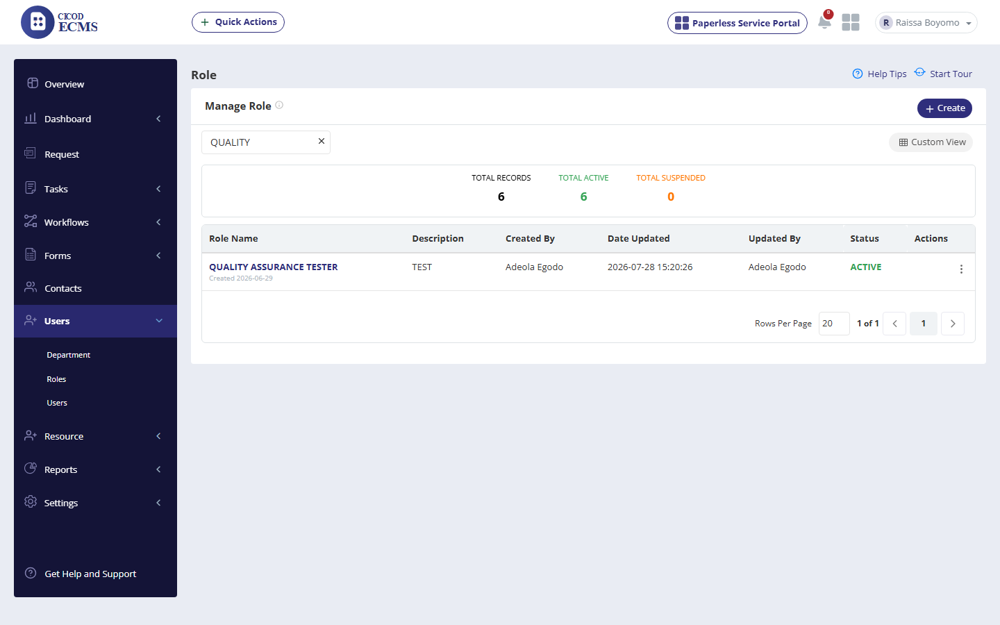 |